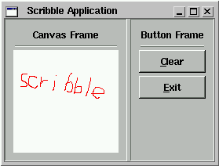

|
Documentation: Introduction [Remove Frame]
|
|
Scribble
|

Fig 1. The Scribble Application.
Scribble demonstrates how to use the FOX Layout Managers, how to create Buttons, and how to handle messages. Enough talk, lets start coding! The very first thing is to include the FOX header files. This is simple, as there is just one thing you need to include:
#include "fx.h"Next, we need a top level Window object, this is a class derived from FXMainWindow. There is only one Main Window; if you need additional toplevel windows, you will probably derive those from FXDialogBox or FXTopWindow.
In the case of Scribble, we make a class called ScribbleWindow:
// Event Handler Object
class ScribbleWindow : public FXMainWindow {
// Macro for class hierarchy declarations
FXDECLARE(ScribbleWindow)
The first line says ScribbleWindow is derived from FXMainWindow;
FXMainWindow, like most FOX classes, is derived from FXObject. Most
classes you will write in the course of programming with FOX are either
directly or indirectly derived from one single top level class called FXObject.
The macro FXDECLARE(ScribbleWindow) declares a number of member functions which every object derived from FXObject should have; we've used a macro as it is always the same, and more convenient to program this way.
Next, we add some member variables to keep track of the various Widgets, and the drawing color. We also keep a flag to remember if the mouse was down, and a flag to remember if the canvas is dirty, i.e. has been scribbled on:
private: FXHorizontalFrame *contents; // Content frame FXVerticalFrame *buttonFrame; // Button frame FXCanvas *canvas; // Canvas to draw into int mdflag; // Mouse button down? int dirty; // Canvas has been painted? FXColor drawColor; // Color for the line
protected:
ScribbleWindow(){}
FOX handles events from the user through a system of messages sent to a certain object. In this case, the received of the messages is the ScribbleWindow class. Thus, we need to add handler member functions to catch these messages and perform some action in response. All message handler functions in FOX have the same argument signature:
long onSomeCommand(FXObject* sender,FXSelector sel,void *ptr);Where:
public:
long onPaint(FXObject*,FXSelector,void*);
long onMouseDown(FXObject*,FXSelector,void*);
long onMouseUp(FXObject*,FXSelector,void*);
long onMouseMove(FXObject*,FXSelector,void*);
long onCmdClear(FXObject*,FXSelector,void*);
long onUpdClear(FXObject*,FXSelector,void*);
ScribbleWindow also needs to define some new message ID's. A message consists of a type and an id. The type defines what has happened; the id identifies the source of the message. Even though we know the object that sent us the message, in many cases, we can be sent the same message from different sources, and the id is much more convenient; so:
public:
enum{
ID_CANVAS=FXMainWindow::ID_LAST,
ID_CLEAR,
ID_LAST
};
We typically define the list of messages some target understands as an enum type. As the ScribbleWindow class is derived from FXMainWindow, it also understands all the messages already understood by the basic FXMainWindow. Our new messages should have different numbers from those. Rather than counting by hand, we let the compiler worry about this by simply defining one extra message id with the name ID_LAST, a subclass can simply use the ID_LAST of it's base class to start counting its message id's from; if ever any new message id's are added to the base class, our own messages are automatically renumbered by the compiler.
We wrap up the remainder of the ScribbleApp class declaration by defining a constructor and one member function called create():
public:
ScribbleWindow(FXApp* a);
virtual void create();
};
In our implementation, the constructor ScribbleWindow will actually
build the GUI. The create() function is a virtual function that is
called by the system. Most FOX Widgets have this create function.
FOX Widgets have a two-stage creation process; first, the client side Widgets
are constructed, using ordinary C++ constructors. Then, once the
whole widget tree is complete, a single call to the application's create()
function will create all the windows for those widgets. This two
step process is needed as the second step may only be executed one the
connecion to the display has been established.
Now, we're ready to implement this new class; in most cases, the previous code would reside in a header file, while the implementation would be in a C++ source file, of course. In the case of ScribbleWindow, it is so simple that we placed everything into one file.
The first thing to do is to define the message map.
The message map is a simple table that associates a message type,
and
message id to a class's member function. Having a message
map allows us to send any message to any [FXObject-derived] object.
Thus:
FXDEFMAP(ScribbleWindow) ScribbleWindowMap[]={
//________Message_Type_____________________ID_______________Message_Handler_______
FXMAPFUNC(SEL_PAINT, ScribbleWindow::ID_CANVAS,ScribbleWindow::onPaint),
FXMAPFUNC(SEL_LEFTBUTTONPRESS, ScribbleWindow::ID_CANVAS,ScribbleWindow::onMouseDown),
FXMAPFUNC(SEL_LEFTBUTTONRELEASE,ScribbleWindow::ID_CANVAS,ScribbleWindow::onMouseUp),
FXMAPFUNC(SEL_MOTION, ScribbleWindow::ID_CANVAS,ScribbleWindow::onMouseMove),
FXMAPFUNC(SEL_COMMAND, ScribbleWindow::ID_CLEAR, ScribbleWindow::onCmdClear),
FXMAPFUNC(SEL_UPDATE, ScribbleWindow::ID_CLEAR, ScribbleWindow::onUpdClear),
};
Note several things about this table; first, there are several messages with the same id, but a different type. Message types indicate what happened, for example, SEL_LEFTBUTTONPRESS means that the left mouse button was just pressed. The message id identifies the source. FOX defines a large collection of message types, each of them has a specific meaning.
Next, we need to implement the ``boilerplate'' stuff that the previous FXDECLARE macro has declared:
FXIMPLEMENT(ScribbleWindow,FXMainWindow,ScribbleWindowMap,ARRAYNUMBER(ScribbleWindowMap))
This the first argument of the macro should have the name of the class, in this case ScribbleWindow; the second argument should be the name of the class from which the class has been derived; in this case, that's FXMainWindow. The last to arguments are a pointer to the message map, and the number of messages in that map. FOX has a convenience macro ARRAYNUMBER() that expands to the number of elements in a compile-time defined array; this makes it easier to add or remove messages.
If the class you're defining implements no additional messages, the last two arguments of FXIMPLEMENT should be simply NULL and 0.
The remainder of the ScribbleWindow's implementation is pretty much ordinary C++ code. The constructor follows below:
// Construct a ScribbleWindow
ScribbleWindow::ScribbleWindow(FXApp *a):FXMainWindow(a,"ScribbleApplication",NULL,NULL,DECOR_ALL,0,0,800,600){
contents=new FXHorizontalFrame(this,LAYOUT_SIDE_TOP|LAYOUT_FILL_X|LAYOUT_FILL_Y,0,0,0,0,0,0,0,0);
// LEFT pane to contain the canvas
canvasFrame=new FXVerticalFrame(contents,
FRAME_SUNKEN|LAYOUT_FILL_X|LAYOUT_FILL_Y|LAYOUT_TOP|LAYOUT_LEFT,0,0,0,0,10,10,10,10);
// Label above the canvas
new FXLabel(canvasFrame,"CanvasFrame",NULL,JUSTIFY_CENTER_X|LAYOUT_FILL_X);
// Horizontal divider line
new FXHorizontalSeparator(canvasFrame,SEPARATOR_GROOVE|LAYOUT_FILL_X);
// Drawing canvas
canvas=new FXCanvas(canvasFrame,this,ID_CANVAS,
FRAME_SUNKEN|FRAME_THICK|LAYOUT_FILL_X|LAYOUT_FILL_Y|LAYOUT_TOP|LAYOUT_LEFT);
// RIGHT pane for the buttons
buttonFrame=new FXVerticalFrame(contents,
FRAME_SUNKEN|LAYOUT_FILL_Y|LAYOUT_TOP|LAYOUT_LEFT,0,0,0,0,10,10,10,10);
// Label above the buttons
new FXLabel(buttonFrame,"ButtonFrame",NULL,JUSTIFY_CENTER_X|LAYOUT_FILL_X);
// Horizontal divider line
new FXHorizontalSeparator(buttonFrame,SEPARATOR_RIDGE|LAYOUT_FILL_X);
// Button to clear
new FXButton(buttonFrame,"&Clear",NULL,this,ID_CLEAR,
FRAME_THICK|FRAME_RAISED|LAYOUT_FILL_X|LAYOUT_TOP|LAYOUT_LEFT,0,0,0,0,10,10,5,5);
// Exit button
new FXButton(buttonFrame,"&Exit",NULL,getApp(),FXApp::ID_QUIT,
FRAME_THICK|FRAME_RAISED|LAYOUT_FILL_X|LAYOUT_TOP|LAYOUT_LEFT,0,0,0,0,10,10,5,5);
// Initialize private variables
drawColor=FXRGB(255,0,0);
mdflag=0;
dirty=0;
}
In almost all cases, it takes just one line of C++ code to create a FOX Widget. Typically, that is a constructor invocation. As most FOX Widget supply convenient default parameters to the constructor, you may not have to specify most of them.
The first line in the body of the constructor creates a top level window; toplevel windows in FOX have no parent, so pass in a pointer to the application object (this in this case). The remaining parameters are the window title, window decorations (such as resize handles, borders, etc.), as well as the initial size and position. The initial size and position may be ignored by your particular window manager, they are just hints.
The next line creates a FXHorizontalFrame Widget. The FXHorizontalFrame Widget is a Layout Manager that places its children horizontally.
The FXMainWindow Widget itself is also a Layout Manager, and the options passed to the FXHorizontalFrame widget's constructor determine how it is placed in the FXMainWindow.
Next, two FXVerticalFrame widgets are created, one for the drawing Canvas and one for the buttons. In the canvasFrame, we then place a Label, a grooved Separator, and the Canvas for drawing into. The Canvas's target object is ScribbleWindow (i.e. this), and its message is set to ID_CANVAS. This causes Canvas to send all its messages to the ScribbleApp object, with the ID set to ID_CANVAS.
Likewise, in the right buttonFrame we place a Label, a grooved Separator, and two Buttons. The clear button has a caption "&Clear". The & in front of a latter will cause the Button to install a hot-key Alt-C automatically. The caption is drawn with the C underlines, as in "Clear." The target of the clear Button is again the ScribbleApp object, and its message ID is ID_CLEAR. Likewise, the exit Button sends ID_QUIT.
Note that we didn't have to define ID_QUIT, as this is a message every FXApp object already understands. Thus, we can simply hook up buttons to their targets.
The remaining arguments to the Buttons determine its frame style (FRAME_THICK|FRAME_RAISED), and how it is placed inside the VerticalFrame Layout Manager (LAYOUT_FILL_X|LAYOUT_TOP|LAYOUT_LEFT) tells the Layout Manager to stretch the Buttons to fill the available room, making them nicely the same size.
Finally, the ScribbleWindow's constructor initializes its member variables for the drawing color and the flags.
Next, we implement the create() routine:
// Create and initialize
void ScribbleWindow::create(){
// Create the windows
FXMainWindow::create();
// Make the main window appear
show();
}
First, we call the base classes' create; then, the main window is shown on the screen by calling its show() member function.
Now, we're ready to handle some messages:
// Mouse button was pressed somewhere
long ScribbleWindow::onMouseDown(FXObject*,FXSelector,void*){
// While the mouse is down, we'll draw lines
mdflag=1;
return 1;
}
// The mouse has moved, draw a line
long ScribbleWindow::onMouseMove(FXObject*, FXSelector,void* ptr){
FXEvent *ev=(FXEvent*)ptr;
if(mdflag){
// Get DC for the canvas
FXDCWindow dc(canvas);
// Set foreground color
dc.setForeground(drawColor);
// Draw line
dc.drawLine(ev->last_x, ev->last_y,ev->win_x, ev->win_y);
// We have drawn something, sonow the canvas is dirty
dirty=1;
}
return 1;
}
// The mouse button was released again
long ScribbleWindow::onMouseUp(FXObject*,FXSelector,void*ptr){
FXEvent *ev=(FXEvent*) ptr;
if(mdflag){
FXDCWindow dc(canvas);
dc.setForeground(drawColor);
dc.drawLine(ev->last_x, ev->last_y,ev->win_x, ev->win_y);
// We have drawn something, sonow the canvas is dirty
dirty=1;
// Mouse no longer down
mdflag=0;
}
return 1;
}
// Paint the canvas
long ScribbleWindow::onPaint(FXObject*,FXSelector,void*ptr){
FXEvent *ev=(FXEvent*)ptr;
FXDCWindow dc(canvas,ev);
dc.setForeground(canvas->getBackColor());
dc.fillRectangle(ev->rect.x,ev->rect.y,ev->rect.w,ev->rect.h);
return 1;
}
The onMouseDown message handler simply sets a flag to remember
than the mouse is now down; the onMouseMove handler draws
a line from the last to the current mouse positions; it then sets a dirty
flag to 1 to remember that the Canvas has been drawn onto. The onMouseUp
handler finishes the line, and resets the mouse down flag. Finally,
the onPaint handler repaints the canvas to the background color.
Nothing remarkable here at all.
The next few message handlers are more interesting:
// Handle the clear message
long ScribbleWindow::onCmdClear(FXObject*,FXSelector,void*){
FXDCWindow dc(canvas);
dc.setForeground(canvas->getBackColor());
dc.fillRectangle(0,0,canvas->getWidth(),canvas->getHeight());
dirty=0;
return 1;
}
// Update the clear button
long ScribbleWindow::onUpdClear(FXObject* sender,FXSelector,void*){
if(dirty)
sender->handle(this,FXSEL(SEL_COMMAND,ID_ENABLE),NULL);
else
sender->handle(this,FXSEL(SEL_COMMAND,ID_DISABLE),NULL);
return 1;
}
The onCmdClear message handler clears the canvas, then resets the dirty flag. The onUpdClear message handler updates the clear Button.
Each Widget in FOX receives a message during idle processing asking it to be updated. For example, Buttons can be sensitized or desensitized when the state of the application changes. In this case, we desensitize the sender (the clear Button) when the Canvas has already been cleared, and sensitize it when it has been painted (as indicated by the dirty flag).
This GUI Update process is extremely powerful:- if an application has N commands, and M Widgets to update for each command, one might have to write NxM update routines; with the GUI Update process, one needs to write only N+M routines. Moreover, if the application data change by some other means (e.g. timers, external data inputs, mulitple computing threads, etc), the GUI will automatically keep itself up to date without any additional coding.
To complete the Scribble Application, only one thing remains:- to kick it all off from the main() routine:
// Here we begin
int main(int argc,char *argv[]){
// Make application
FXApp* application=new FXApp("Scribble","Test");
// Start app
application->init(argc,argv);
// Scribble window
new ScribbleWindow(application);
// Create the application's windows
application->create();
// Run the application
application->run();
return 0;
}
First, we construct a FXApp object by calling new FXApp("Scribble","Test"). The first string is the name of the application `Scribble' is often referred to as the Application Key, while the second string`Test' is called the Vendor Key. Together, these two strings are used to determine the application's registry- or preference-settings.
The call to application->init(argc,argv) initializes the application; argc and argv of the command line are passed in so that the FOX system can filter out some FOX-specific command line arguments, such as for example the -display parameter.
The call new ScribbleWindow(application) builds
the entire GUI for our application; the GUI consists essentially of two
parts:- the client-side resources, which live in our own process,
and the server-side resources which live in the X server (X11) or
GDI (Windows).
When we construct a FOX widget, only the client-side resources are
determined. A subsequent call to application->create() recursively
creates all server-side resources for each widget that has been previously
constructed.
Finally, application->run() member function is called to run
the application. This function never returns.
|
Recap
|
|
|